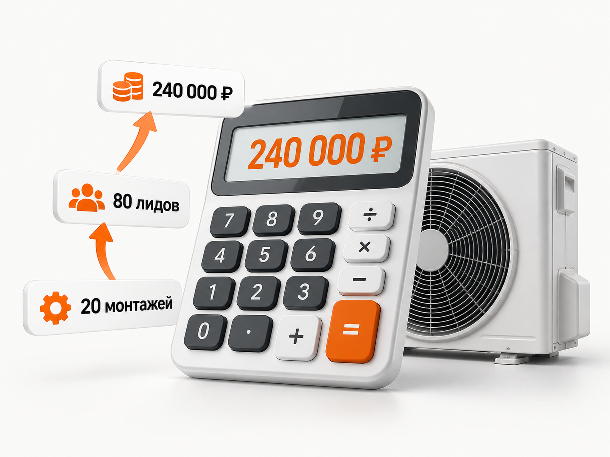
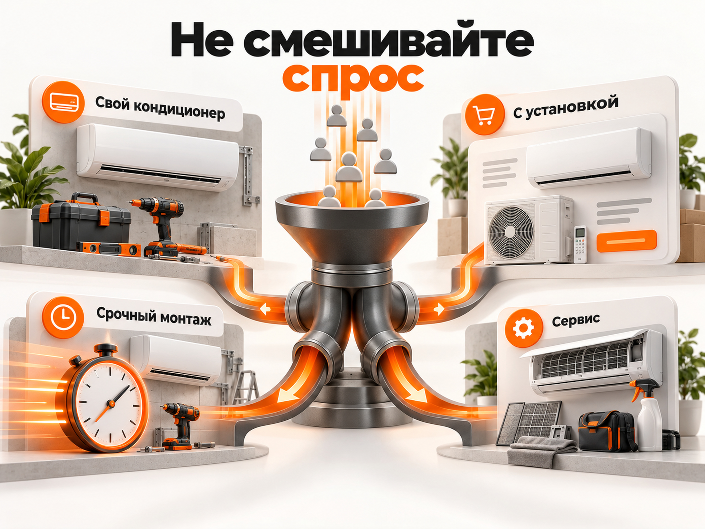

Блог о платном трафике
Как продвигать установку кондиционеров в 2026 году
Для продвижения установки кондиционеров в 2026 году я бы начинал с Поиска Яндекс Директа и заранее разделял разные типы спроса: монтаж уже купленного кондиционера, продажу оборудования с установкой, срочный монтаж, сервис и B2B. Для каждого направления нужна своя экономика, оффер и посадочная страница.
Рекламный бюджет лучше считать не от абстрактной «средней цены заявки», а от нужного количества выполненных монтажей. Сначала определяется допустимая стоимость привлечённого заказа и конверсия обращения в заказ, затем рассчитывается допустимый CPL. РСЯ и ретаргетинг имеет смысл оценивать отдельно от Поиска.
Спрос на кондиционеры сильно зависит от региона, погоды и загрузки монтажных бригад. Поэтому рекламу лучше подготовить до сезонного всплеска, а масштабировать только тогда, когда фактическая стоимость выполненного монтажа укладывается в экономику бизнеса.
Что происходит со спросом на кондиционеры в 2026 году
Сезонность в этой нише действительно резкая. Например, по данным «Авито Услуг», в Краснодаре в апреле 2026 года спрос именно на установку кондиционеров оказался в 4,5 раза выше, чем годом ранее. В первой половине мая М.Видео зафиксировала рост продаж кондиционеров на 22% в штуках относительно предыдущего месяца.
Но ориентироваться только на календарь тоже нельзя. Летом 2026 года в Краснодарском крае количество покупок кондиционеров, наоборот, снизилось на 18% год к году. Одной из причин стала более прохладная погода.
Для рекламы отсюда следует простой вывод: спрос сильно зависит от региона и погоды. Нельзя однажды определить «пиковый месяц» и ежегодно механически повторять одинаковый медиаплан.
Подготовить рекламу лучше до всплеска спроса. Тогда к первым жарким неделям уже известны реальные запросы, конверсия сайта, качество обращений и приблизительная стоимость клиента. Запускать всё с нуля в момент, когда спрос и конкуренция уже выросли, значительно сложнее.
Какие результаты показывает Яндекс Директ в свежих кейсах
Для прогноза я нашёл два актуальных российских кейса 2026 года, где опубликованы исходные цифры и можно проверить арифметику.
Кейс 1. Продажа кондиционеров с установкой «под ключ», май - август 2026:
- расход: 500 000 ₽;
- лиды: 542;
- CPL: 923 ₽.
Кейс 2. Продажа и установка сплит-систем:
- февраль 2026: расход 57 430 ₽, 11 лидов, CPL 5 221 ₽;
- март 2026: расход 126 340 ₽, 23 лида, CPL 5 493 ₽;
- апрель 2026: расход 122 510 ₽, 34 лида, CPL 3 603 ₽;
- май 2026: расход 108 270 ₽, 38 лидов, CPL 2 849 ₽.
В первом кейсе использовались Поиск, РСЯ и ретаргетинг. За сезон рекламодатель получил 542 заявки и 206 продаж. Опубликованная конверсия лида в продажу составляет 38%. Бюджет - 500 000 ₽. Арифметика сходится: 500 000 / 542 = примерно 923 ₽ за заявку, а рекламные расходы на одну продажу составляют около 2 427 ₽. Это мой пересчёт исходных данных кейса.
Во втором проекте интересна другая динамика. С февраля по май количество заявок выросло с 11 до 38, а CPL снизился с 5 221 до 2 849 ₽. При этом средняя цена клика выросла с 8 до 59 ₽. Дешёвый клик здесь вообще не был показателем хорошей рекламы: кликов стало значительно меньше, а лидов больше.
Эти кейсы нельзя превращать в утверждение, что «нормальный CPL для кондиционеров равен 923 ₽» или «средний CPL составляет 3 000 ₽». У проектов разная география, посадочные страницы, предложения, структура рекламы и определение целевого действия.
Есть ещё одно принципиальное отличие. Оба кейса относятся преимущественно к продаже кондиционера вместе с монтажом. Если компания занимается только установкой уже купленного оборудования, экономика заказа будет другой и допустимый CPL обычно придётся считать жёстче.
Какой CPL я бы закладывал в прогноз
Для первичного медиаплана продажи и установки кондиционеров я бы использовал не одну цифру, а три расчётные точки:
- сильный результат после оптимизации - около 1 500 ₽;
- рабочий ориентир - около 3 000 ₽;
- осторожный сценарий - около 5 000 ₽.
Это не средние показатели рынка. Я округлил диапазон, который укладывается между результатами свежих кейсов 2026 года, чтобы его можно было использовать для предварительного расчёта.
Для бизнеса, который оказывает только услугу монтажа, сначала нужно посчитать допустимую стоимость заказа. Если экономика не выдерживает CPL в несколько тысяч рублей, сам факт того, что другие компании получают такие заявки, бесполезен.
Сколько можно платить за заявку на установку кондиционера
Для бизнеса, который устанавливает уже купленные кондиционеры, допустимый CPL нужно считать от экономики монтажа, а не от чужих кейсов по продаже оборудования с установкой.
Базовая формула:
Допустимый CPL = допустимая стоимость привлечённого монтажа × конверсия обращения в заказ
Например, компания готова тратить на получение одного оплаченного монтажа максимум 6 000 ₽, а в заказ превращается 25% обращений.
6 000 × 25% = 1 500 ₽.
При таких вводных CPL выше 1 500 ₽ уже не укладывается в заданную экономику. Тогда нужно повышать конверсию в заказ, менять предложение, увеличивать допустимую стоимость привлечения за счёт маржи или снижать стоимость обращения.
Конверсия 25% здесь является расчётным примером, а не средним показателем рынка.
Как рассчитать рекламный бюджет
Прогноз лучше строить от нужного количества установок назад.
Нужное количество лидов = план установок / конверсия лида в заказ
Рекламный бюджет = количество лидов × прогнозный CPL
Допустим, бизнес хочет получить 20 дополнительных монтажей в месяц, а в заказ превращается 25% обращений.
20 / 25% = 80 лидов.
| Сценарий | CPL | Нужно лидов | Рекламный бюджет |
|---|---|---|---|
| Сильный результат | 1 500 ₽ | 80 | 120 000 ₽ |
| Рабочий ориентир | 3 000 ₽ | 80 | 240 000 ₽ |
| Осторожный сценарий | 5 000 ₽ | 80 | 400 000 ₽ |
Конверсия 25% в этом примере - расчётное допущение, а не «средняя по рынку». В одном из свежих кейсов 2026 года опубликована конверсия 38%, но переносить её на другой бизнес без проверки нельзя.

Продажу кондиционера и установку лучше не смешивать
У клиента могут быть совершенно разные задачи:
- установка своего кондиционера;
- кондиционер с установкой;
- срочный или сложный монтаж;
- обслуживание;
- B2B.
Я бы не собирал всё это в одну рекламную воронку. Установка купленного кондиционера и продажа системы «под ключ» могут выдерживать совершенно разную стоимость клиента.
Это касается и сайта. Пользователь, который уже купил сплит-систему, не должен попадать на страницу с каталогом из сотен моделей и самостоятельно искать информацию о монтаже.
| Тип спроса | Что нужно клиенту | Куда вести | Основная конверсия |
|---|---|---|---|
| Свой кондиционер | Только монтаж уже купленного оборудования | Страница установки | Звонок или заявка на монтаж |
| Кондиционер с установкой | Оборудование и монтаж под ключ | Отдельная страница продажи с установкой | Заказ комплекта |
| Срочный монтаж | Ближайшее свободное окно | Страница или блок со сроком выезда | Запись на дату |
| Сложный монтаж | Нестандартные условия и предварительная оценка | Страница сложного монтажа | Заявка на расчёт |
| Сервис | Чистка, обслуживание или ремонт | Отдельная сервисная страница | Заявка на обслуживание |
| B2B | Несколько объектов или регулярные работы | B2B-страница | Заявка на расчёт проекта |
Разделение спроса нужно не ради более сложной структуры рекламы. Оно позволяет показывать человеку именно тот оффер, цену и следующий шаг, которые соответствуют его задаче.

Какой оффер использовать
В сезон скорость становится частью продукта. Если ближайшая дата монтажа известна, её имеет смысл показывать сразу. В актуальном кейсе 2026 года одним из основных офферов был монтаж за 24 часа, а в рекламе использовалась цена «под ключ».
Для услуги установки я бы делал акцент на конкретике: что входит в стандартный монтаж, сколько он стоит, когда может приехать бригада, сколько метров трассы входит в цену, как оплачиваются дополнительные работы, есть ли гарантия на монтаж и убирает ли бригада после работ.
Формулировка «установка от 3 000 ₽», если почти каждый реальный монтаж обходится существенно дороже, способна дать дешёвые заявки и одновременно плохую конверсию в заказ. Рекламе нужны не любые обращения, а люди, которых устраивают реальные условия.
Какой должна быть посадочная страница
Страница должна отвечать на основные вопросы ещё до звонка.
На первом экране я бы сразу показывал услугу, город или территорию выезда, стоимость стандартного монтажа либо понятный принцип расчёта и ближайший срок установки. Ниже - что входит в цену, возможные доплаты, фотографии выполненных работ, гарантии, отзывы и ответы на вопросы о монтаже.
Для мобильного пользователя номер телефона должен быть доступен сразу. В жаркий период часть аудитории не будет долго изучать сайт: человек сравнивает несколько исполнителей и звонит тем, у кого понятны цена и срок.
Если компания одновременно продаёт оборудование, устанавливает чужие кондиционеры и занимается обслуживанием, под эти направления лучше делать отдельные посадочные страницы или как минимум самостоятельные блоки с разными офферами.
Что настроить в аналитике до запуска
Для установки кондиционеров одной цели «отправил форму» мало. Значительная часть обращений приходит по телефону.
Яндекс Метрика позволяет передавать данные коллтрекинга и создавать цели по звонкам. Можно отдельно учитывать любой звонок, уникальный звонок, звонок заданной длительности и передавать дополнительные метки о результате разговора.
Я бы собирал в одной воронке источник рекламы, обращение, квалификацию, согласованную стоимость, запись на монтаж и выполненный заказ. Если есть CRM, полезно возвращать в аналитику более глубокие статусы.
Иначе алгоритм может начать искать людей, которые охотно звонят или заполняют форму, но не покупают.
Как запускать Яндекс Директ на установку кондиционеров
Поиск
Для этой ниши Поиск я бы ставил первым. Человек, который вводит «установка кондиционера цена», «монтаж сплит системы», «установить кондиционер сегодня» или запрос с районом и городом, уже сформировал потребность.
При сборе семантики нужно разделять как минимум установку своего оборудования, продажу с монтажом, срочные и сложные работы, обслуживание и B2B. Нерелевантные услуги нужно отсекать, а реальные поисковые запросы после запуска регулярно проверять.
Коммерческую семантику я бы собирал отдельными группами по намерению пользователя:
- установка кондиционера, монтаж кондиционера, монтаж сплит-системы;
- запросы с ценой: установка кондиционера цена, стоимость монтажа кондиционера;
- запросы со срочностью: установить кондиционер сегодня, срочная установка кондиционера;
- локальные запросы с городом, районом или другой реальной зоной обслуживания;
- отдельно запросы на кондиционер вместе с установкой, если компания продаёт оборудование.
На старте отдельно проверить информационный и нерелевантный спрос. Типовые кандидаты в минус-фразы - «своими руками», «инструкция», «схема», «вакансия», «работа». Запросы про ремонт, чистку и заправку исключать только в том случае, если компания действительно не оказывает эти услуги.
В 2026 году на Поиске и в Картах Яндекс Директа автотаргетинг полностью отключить нельзя: в каждой группе должна быть выбрана хотя бы одна категория запросов. Поэтому после запуска нужно регулярно проверять реальные поисковые запросы, категории автотаргетинга и минус-фразы, а не контролировать только вручную собранные ключевые фразы.
Поиск и РСЯ я бы оценивал отдельно. У них разный характер трафика и качество обращения.
География
Для монтажной компании геотаргетинг напрямую связан с экономикой. Нет смысла получать дешёвую заявку из района, куда бригада потратит два часа только на дорогу.
В Яндекс Директе можно задавать города и регионы, а также работать с точками на карте и радиусом от 0,5 до 10 км. Это позволяет точнее строить зоны работы вокруг базы или нужных районов.
Я бы заранее разделил территорию на нормальную зону выезда, дорогие удалённые районы и территории, куда компания вообще не ездит.
РСЯ и ретаргетинг
РСЯ может давать дополнительный объём, но я не стал бы смешивать её статистику с Поиском.
В сетях логично тестировать понятные визуальные предложения: установка до жары, ближайшие свободные даты, цена стандартного монтажа, кондиционер с установкой, аккуратный монтаж. Отдельно можно возвращать пользователей, которые уже были на странице цены или каталога, но не обратились.
В свежем кейсе с CPL 923 ₽ использовалась именно связка Поиска, РСЯ и ретаргетинга, но это результат конкретного проекта, а не доказательство, что такая структура автоматически повторится у другого рекламодателя.
Стратегия
Я бы не выбирал оплату за конверсии только потому, что она доступна в интерфейсе.
Подробнее логику выбора между конверсиями, кликами и ручным управлением я разбираю в статье о выборе стратегии Яндекс Директа.
Яндекс рекомендует обеспечивать конверсионным стратегиям бюджет как минимум на 10-20 конверсий в неделю. Если событий мало, алгоритму не хватает данных.
В небольшом городе дробление бюджета на десяток маленьких кампаний может только ухудшить обучение. Там полезнее укрупнить структуру и собирать достаточное количество качественных целевых действий.
Когда запускать рекламу
Рекламу установки кондиционеров лучше запускать до сезонного всплеска спроса. К жарким неделям у кампании уже должны быть реальные данные по запросам, конверсии сайта, качеству обращений и стоимости заказа.
Февраль - март:
- подготовить сайт и аналитику;
- собрать семантику;
- начать первые тесты.
Апрель - май:
- накапливать статистику;
- проверять CPL и качество лидов;
- постепенно увеличивать объём.
Жара и пик спроса:
- масштабировать только то, что даёт прибыльные заказы;
- следить за загрузкой бригад.
Конец сезона:
- снижать расходы там, где спрос падает;
- переводить акцент на сервис, обслуживание и другие услуги.
В 2026 году даже внутри одного региона динамика оказалась очень чувствительной к погоде: весной в Краснодаре спрос на установку резко вырос, а летом продажи климатической техники снизились относительно прошлого года. Поэтому бюджет должен реагировать на фактический спрос, а не только на даты в медиаплане.
Что делать, когда монтажные бригады уже загружены
Рост количества лидов не всегда полезен.
Если свободных окон на ближайшие дни уже нет, дальнейшее увеличение рекламного бюджета может просто создавать очередь, которой достанется конкурент. В такой ситуации я бы сначала смотрел на пропускную способность бизнеса.
Можно сократить менее выгодные сегменты, повысить требования к экономике рекламы, ограничить географию, оставить наиболее маржинальные работы или перераспределить часть бюджета на будущий спрос.
В этой нише маркетинг должен быть связан с расписанием монтажников. CPL в 1 000 ₽ ничего не даёт, если компания физически не может выполнить поступающие заказы.
Какие ещё каналы использовать
Яндекс Директ способен быстро забирать сформированный спрос, но строить продвижение только на нём рискованно.
Для органического поиска нужны полноценные коммерческие страницы под установку кондиционеров, монтаж сплит-систем, стоимость работ и конкретную географию. По запросу «установка кондиционеров» пользователь обычно ищет исполнителя, поэтому под такой запрос нужна именно коммерческая страница услуги, а не информационная статья.
Для локального бизнеса также имеют значение Яндекс Карты и другие геосервисы с отзывами, фотографиями работ, актуальным телефоном и временем работы. Авито можно тестировать как отдельный источник заявок, особенно в сегменте частных мастеров и небольших монтажных компаний. Его экономику нужно считать отдельно от Директа.
SEO, карты и накопленные отзывы особенно полезны потому, что уменьшают зависимость от стоимости рекламного аукциона в пик сезона.
Какие показатели контролировать
Главные показатели для рекламы установки кондиционеров - стоимость квалифицированного обращения, стоимость выполненного монтажа и прибыль с привлечённого заказа. CTR и CPC нужны для диагностики, но сами по себе не показывают бизнес-результат.
Показательный пример - свежий кейс 2026 года, где CPC за четыре месяца вырос примерно с 8 до 59 ₽, однако CPL одновременно снизился с 5 221 до 2 849 ₽. Если бы рекламу оптимизировали только под дешёвый переход, вывод получился бы противоположным реальному результату.
Рабочая воронка выглядит так:
расходы -> обращения -> квалифицированные лиды -> согласованные заказы -> выполненные монтажи -> выручка -> маржинальная прибыль
Именно по ней стоит принимать решение о масштабировании.
Основные ошибки в рекламе установки кондиционеров
Самые дорогие ошибки здесь обычно связаны не с конкретной настройкой объявления, а с самой логикой продвижения: запуск рекламы только после начала жары, смешивание продажи оборудования и монтажа в одной кампании, отсутствие коллтрекинга, оптимизация на любую заявку, слишком широкая география, непрозрачная цена на сайте и закупка трафика без учёта свободных монтажных мощностей.
Ещё одна ошибка - пытаться повторить чужой CPL. Результат 923 ₽ из свежего кейса интересен как доказательство того, что такая стоимость возможна, но это не обещание для другого бизнеса.
Пошаговый план продвижения
- Посчитать маржу с типового монтажа и максимально допустимую стоимость привлечения заказа.
- Разделить установку своего оборудования, продажу с монтажом, сервис и B2B.
- Определить реальную территорию работы монтажных бригад.
- Подготовить отдельные посадочные под основные типы спроса.
- Настроить Метрику, формы, звонки, коллтрекинг и передачу статусов.
- Запустить Поиск до начала пикового спроса.
- Отдельно протестировать РСЯ и ретаргетинг.
- Считать не все лиды, а квалифицированные обращения и выполненные заказы.
- Сравнить фактический CPL с допустимым CPL по экономике.
- Масштабировать рекламу только при наличии свободной мощности у монтажных бригад.
Итоговый прогноз
Для продажи кондиционеров вместе с установкой свежие кейсы 2026 года показывают очень широкий диапазон CPL - примерно от 923 до 5 493 ₽. Поэтому единой достоверной «средней цены заявки» по рынку я бы не использовал.
Для предварительного медиаплана разумно проверить несколько точек: около 1 500 ₽ как сильный результат, около 3 000 ₽ как рабочий расчёт и около 5 000 ₽ как осторожный сценарий. После первых реальных данных прогноз нужно заменить фактической экономикой конкретного бизнеса.
Если компания занимается только монтажом чужого оборудования, начинать нужно вообще не с чужого CPL. Сначала определяется допустимая стоимость выполненной установки, затем конверсия из обращения в заказ и только после этого допустимая цена лида.
В установке кондиционеров выигрывает не реклама с самым дешёвым кликом и даже не всегда реклама с самым дешёвым лидом. Нужна система, которая приводит столько прибыльных монтажей, сколько компания действительно способна выполнить.